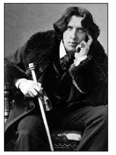
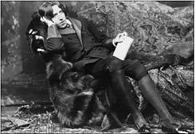
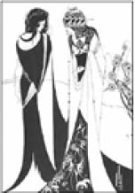
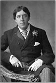

Oscar Wilde (1854-1900)
“Wilde, çağının, belki de bütün çağların en büyük konuşmacısıydı.”
Bernard Shaw
“En güzel yazıları bile, konuşmalarının görkemli parlaklığının soluk bir yansımasıdır.”
Andre Gide
Oscar Fingal O’Flahertie Wills Wilde, 16 Ekim 1854 günü İrlanda’nın başkenti Dublin’de doğdu. 1867 yılında kız kardeşi Isola’nın dokuz yaşında ölmesi üzerine ilk şiirini yazdı.
Kazandığı burslarla okuduğu Oxford Üniversitesi’ nden birinci olarak mezun oldu. Bu arada yazdığı şiirler ona ödüller getiriyordu.
Çeşitli çevrelerde yapılan sosyete toplantılarında konuşmalar yapıyor ve büyük beğeni topluyordu. Yazdığı “Sabır” (Patience) adlı oyunun tanıtımı için Amerika’ya gittiğinde çoğu sanatla ilgili olmak üzere, iki yüz altmış günde yüz kırk konferans verdi. Sonrasında Amerika üzerine yaptığı yorumlar da oldukça ilgi topladı: 178
“Herkes trene yetişecekmiş gibi koşuyor Amerika’da. Ne şiire ne de aşka uygun bir ortam orası... Romeo ve Juliet’in sürekli trene yetişme kaygıları olsaydı ya da kafaları gidiş-dönüş biletlerinin sorunlarıyla karışmış bulunsaydı, Shakespeare o dokunaklı, şiir dolu sahneleri yazabilir miydi?”
“Amerika’daki resimleri yükseğe, tavana yakın asma alışkanlığı, önceleri mantıksız gelmişti bana. Resimlerin ne denli kötü olduğunu görünce, bu geleneğin yararını anladım ancak.”
“Parlak gösteriler, tantanalı törenler yok Amerika’da. İki geçit resmi gördüm yalnızca: Birinde itfaiyeciler önde, polisler arkada, ötekinde ise, polisler önde, itfaiyeciler arkada yürüyordu.”
Daha sonra Paris’e giden Wilde, orada Victor Hugo, Balzac gibi önemli isimlerle tanıştı. Paris’le ilgili duygularını ise şöyle anlatıyor Oscar Wilde:
“Bir insan vaktini çok hoş bir biçimde yitirebilir, ama yolunu hiçbir zaman yitirmez Paris’te. Eyfel Kulesi’ne arkanızı dönün: Önümüzdedir tüm Paris. Sonra da ona bir bakıverin, Paris kayboluverir.”
Paris’te verilen bir yemekte birbirinden pek hoşlanmayan Oscar Wilde ve Fransız yazar Emile Zola bir araya gelmişlerdi. Yemek sonunda sanat üzerine konuşma yapan Zola, eleştirilerle dolu konuşmasının sonunda:
“Ne yazık ki Sayın Wilde, barbar bir dil olan kendi dilinde yanıt vermek zorunda kalacak” diyerek yerine oturmuştu.

Oscar Wilde, Fotoğrafçı Napoleon Sarony, 1882
Konuşmak için ayağa kalkan Wilde, mükemmel bir Fransızcayla şöyle yanıt vermişti: “Ben doğuştan İrladalı’yım, İngiliz soyundanım ve Sayın Zola’nın dediği gibi, Shakespeare’in dilini kullanmak zorundayım.”
1892 yılında Lady Windermere’in Yelpazesi adlı oyununu yazmayı tamamladı. Oyun, St. James’s Tiyatrosu’nda sergilendikten sonra alkışlarla sahneye çıkan Wilde seyircilere şöyle bir konuşma yaptı:
“Bayanlar baylar, bu geceden büyük bir zevk duydum. Oyuncular, güzel bir oyunun hoş bir yorumunu yaptılar; sizin değerlendirmeniz de çok akıllıcaydı. Oyunumun ner-deyse düşündüğüm kadar üstün bir yapıt olduğuna beni inandıran gösterinizden ötürü sizi kutluyorum.”
Bu oyun, onun ününü daha da artırmıştı. Her şey oldukça güzel giderken daha önce yazdığı Dorian Gray’in Portresi adlı eserinin de aleyhine kullanıldığı, aynı cins ilişkileri konu alan Queensberry Davası tüm bu iyi gidişin sonunu işaret ediyordu. Dava sonunda Wilde, iki yıl ağır hapis cezasına çarptırıldı. İflasa zorlandı, oyunları sahnelerden kaldırıldı ve eşi Constance ondan boşandı. Ağır zindan günlerinin ardından Reading Zindanı Baladı yazdığı son eseri oldu.
30 Kasım 1900 tarihinde Paris’te bir otel odasında menenjit hastalığından öldü.
Salome, Padua Düşesi, Lady Windermere’in Yelpazesi, Önemsiz Bir Kadın, ideal Bir Koca, Ciddi Olmanın Önemi, Mutlu Prens, Genç Kral, Dorian Gray’in Portresi, Bir Sanatçı Olarak Eleştirmen, Reading Zindanı Baladı eserlerinden sadece bazılarıdır.
Ünlü bir oyun yazarı, oyununun sonunda Oscar Wilde’a düşüncelerini sorar. Wilde ise şöyle yanıt verir:
“Başından sonuna kadar uyuyabildiğim en iyi oyundu.”

Salome, illüstratör Aubrey Vincent Beardsley, 1893
Bir yayıncı, Oscar Wilde’dan en iyi yüz eseri seçmesini istediğinde “Bunu yapmam imkânsız, bugüne kadar ancak beş kitap yazabildim” diye cevap verir.
Bir aristokrat, Londra sokaklarında gördüğü Wilde’a arkasından yaklaşıp sırtına şiddetle vurarak “Oscar, şiş-manladıkça şişmanlıyorsunuz” der.
Oscar Wilde, “Siz de kabalaştıkça kabalaşıyorsunuz” yanıtını verir.

Oscar Wilde, Fotoğrafçı W. & D. Downey, 1889
Oscar Wilde’dan...
“Çocuklarına masallar yazmak, her babanın görevidir.”
“insan ruhu yaşlı doğar, giderek gençleşir. Yaşamın komedisidir bu... insanın bedeniyse, genç doğar ve giderek yaşlanır. O da yaşamın trajedisidir...”
“Övülünce alçakgönüllü olurum, ama sövülünce, yıldızlara eriştiğimi anlarım.”
“Öbür gün yapabileceğin hiçbir şeyi yarına bırakma.”
“Bir insan kendi kimliğiyle konuşurken pek az kendisi gibidir, ona bir maske verilirse gerçeği anlatır ancak.”
“Bazen yıllar akıp geçiverir insan için, gerçek anlamda hiç yaşamadan, sonra da, bütün bir yaşam sığıverir tek bir saatin içine.”
“Anlattıklarınız gerçek... Öyleyse neden anlatıyorsunuz? Hiç de ilginç değil; bunu siz de biliyorsunuz. iki tür dünya vardır. Birine gerçek dünya denir, onu görmek için üstüne konuşmak gerekmez çünkü. Ötekiyse, üstüne konuşulması gereken sanat dünyasıdır, konuşulmazsa var olamaz çünkü.”
“Adamın biri, öyküler anlattığı için köyünde çok sevilirmiş. Her sabah köyden ayrılır, akşam dönermiş. Bütün gün sıkıcı işlerle uğraşmış olan köylüler çevresini sarıp sorarlarmış:
‘Neler gördün bugün? Hadi anlat bize.’
O da anlatırmış: ‘Flüt çalan yarı insan, yarı keçi bir yaratık gördüm. Çevresinde bir sürü peri döne döne dans ediyordu.’
‘Başka neler gördün? Anlat, anlat’ dermiş köylüler.
‘Deniz kıyısına vardığımda, üç denizkızı gördüm dalgaların üstünde, yemyeşil saçlarını tarıyorlardı altın bir tarakla.’
Öyküler anlattıkça, köylüler onu daha çok seviyorlarmış. Bir sabah, yine köyden çıkıp gitmiş, deniz kıyısına geldiğinde bir de ne görsün? Dalgaların üstünde üç denizkızı altın bir tarakla yeşil saçlarını taramıyorlar mı gerçekten! Yürüyüp ormana gitmiş,
bu kez gerçekten yarısı insan, yarısı keçi olan bir yaratık flüt çalıyor, periler de çevresinde dans ediyorlarmış.
O akşam köye döndüğünde, köylüler sormuşlar her zamanki gibi, ‘Gel, anlat bize, neler gördün?’
‘Hiçbir şey’ demiş adam, ‘Hiçbir şey görmedim.”